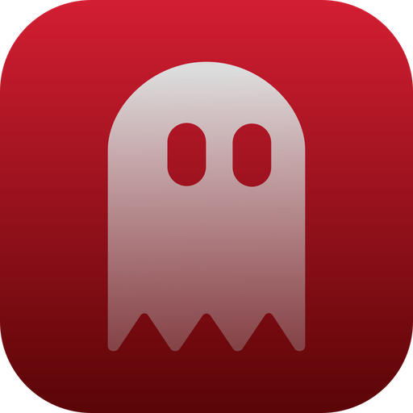

Ghostlog
A dev-notes tool that never phones home.
Ghostlog watches the projects you point it at — commits, failed shell commands, moments you flag in a localhost tab — and turns them into a running, searchable log of what happened and why. No account, no cloud, no telemetry.
Windows/Linux planned
What it captures
- File changes — a filesystem watcher on each watched project (git repos only) picks up meaningful edits as you work.
- Git commits — a post-commit hook calls Ghostlog's CLI mode, which reads the commit diff and drafts an entry.
- Shell errors — an optional shell hook captures the command and exit code whenever a terminal command fails.
- Browser events — a companion browser extension can flag a moment on a localhost tab, optionally attaching a screenshot.
Why local-first
- Zero network ports. Frontend ↔ backend is Tauri IPC. App ↔ browser extension is Native Messaging over stdio — not reachable by any webpage.
- No cloud, no telemetry. Ghostlog doesn't know you exist. AI drafting is bring-your-own: point Settings at a local model server, or leave it unset.
- Path scoping in Rust. Watched folders must be the root of a git repository — validated server-side, never trusted to the UI.
- One folder, no hidden state. Compiled documents, screenshots, session data — everything lands where you choose.
